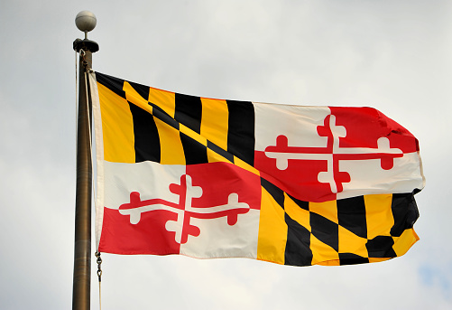
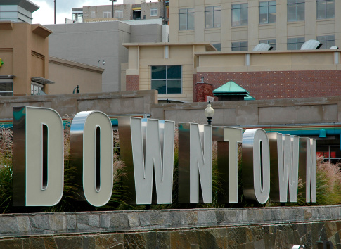

Silver Spring Timeline
1632 - King Charles I grants Maryland to Lord Baltimore. Charles County includes the land which would become Silver Spring.
1688 - Land grant of "The Girls Portion" to Henry Darnall. This land grant contains all of what is now Downtown Silver Spring south of Colesville Road, the northern part of Takoma Park, and parts of the District of Columbia.
1695 - Charles County divided. The new Prince George's County includes the area which would become Silver Spring.
1745 - Prince Georges County divided. The area which will become Silver Spring becomes a part of the new Frederick County.
1776 - Montgomery County is created from the southern portion of Frederick County on October 1, 1776.
1816 - The short-lived "Simpsonville" post office established.
1830 - Francis Preston Blair moves from Kentucky to Washington at the request of President Andrew Jackson to serve as editor of the Democratic newspaper The Globe.
1840 - Francis Preston Blair, his daughter, Elizabeth, along with their thirsty horse, Selim, discover the spring after which Silver Spring takes its name. Sparkling flakes of mica in the water give it the appearance of silver.
Parks and Recreation
Four major creeks run through Silver Spring:
from west to east, they are Rock Creek,
Sligo
Creek,Long Branch, and Northwest Branch.
Each is
surrounded by parks offering hiking trails,
playgrounds,picnic areas, and tennis courts.
On weekends,
roads are closed in the parks for bicycling
and
walking.[13]